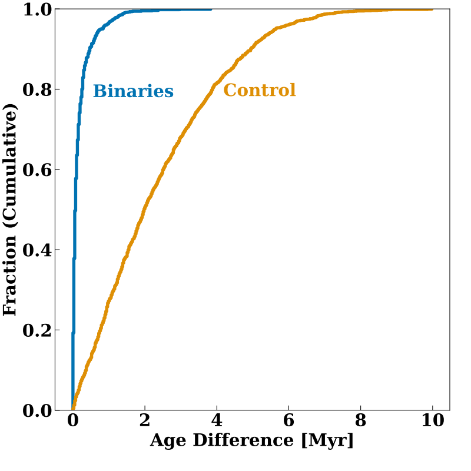
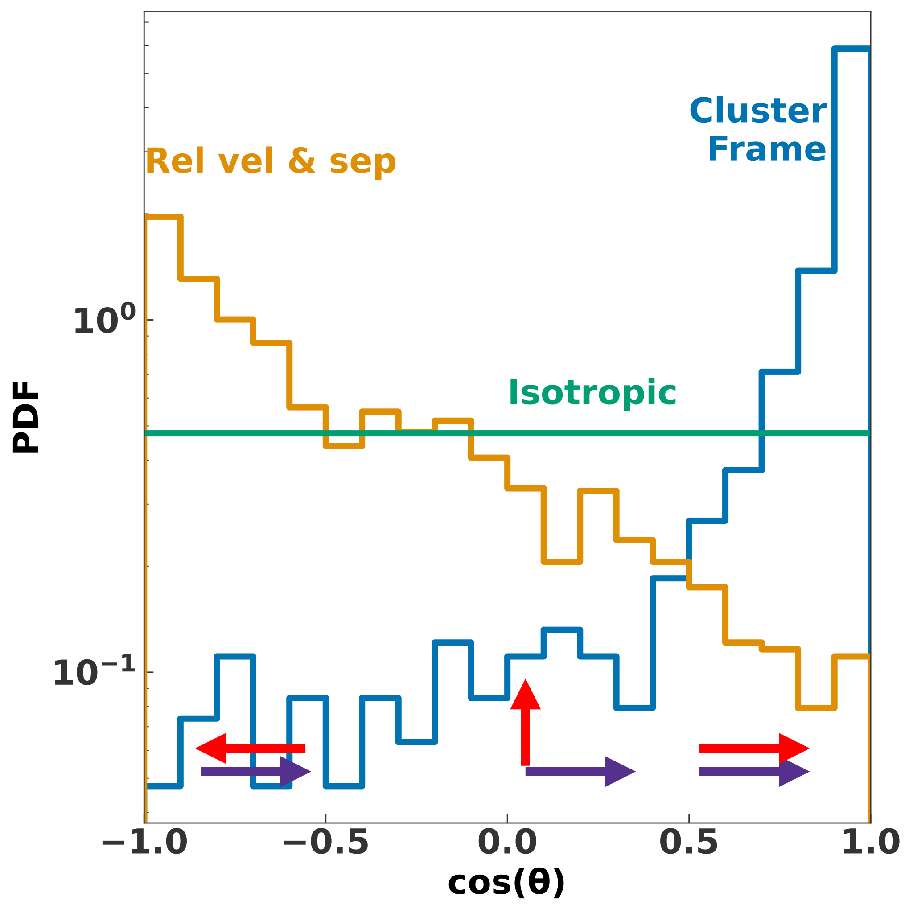
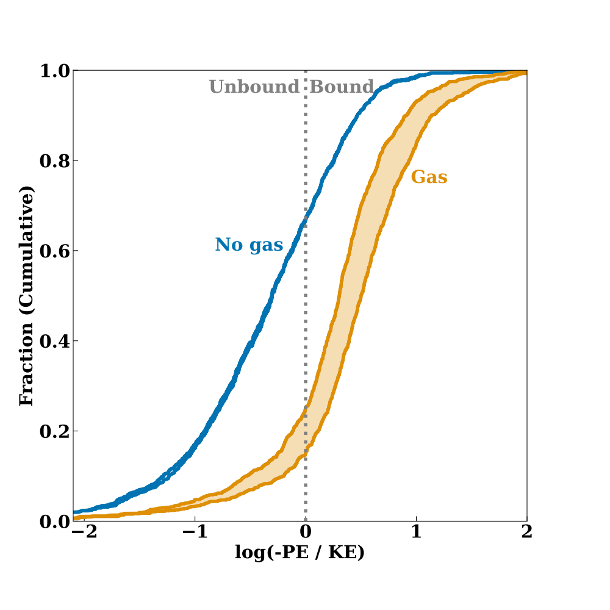

Low mass binaries are bound from birth
Aleksey Generozov
Stella Offner, Kaitlin Kratter, Hagai Perets, Mike Grudic, David Guszejnov
University of Texas at Austin, Technion
Understanding binary formation
- Are binary stars captured? (Rozner, Generozov, & Perets 2023)
Use existing, detailed simulations for insight
- Gravity + MHD + feedback (winds, radiation, etc.)
Multiplicities in simulation (cf Guszejnov et al 2023)
Now let's look at binary formation
Binary stars have similar ages

- Age differences of binaries and random pairs
And velocities

- Angle between stars’ velocities at "Innital Snapshot Together”
Most binaries form bound

- Initial Snapshot Together
- Blue = No gas in PE
- Orange = Gas in PE
- ~70-80% of binaries are bound from birth
Conclusions
- Most low mass binaries are born bound in detailed simulation of star forming cluster.
- Capture/exchange are sub-dominant.
- Implication for protoplanetary disks.